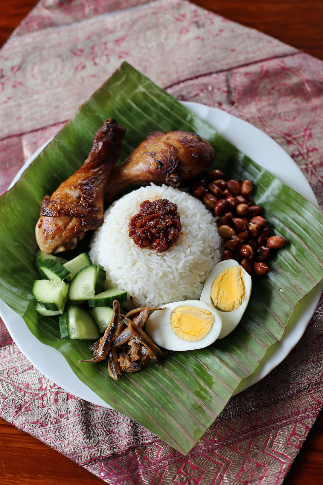

Nasi Lemak

Nasi Lemak is considered Malaysia's national dish. The rice is cooked in coconut milk, and is served alongside sambal, crispy anchovies, toasted peanuts and cucumber.
Ingredients
- Rice
- Coconut milk
- Pandan leaves
- Salt
- Tamarind
- Sambal ikan bilis (dried anchovies sambal)
- 2 hard boiled eggs
- 3 sardines
- 1 small cucumber
Instructions
- Rinse the rice and drain it. Add the coconut milk along with a pinch of salt and some water. Add the pandan leaves and start cooking the rice.
- Rinse the dried anchovies and drain the water. Fry the anchovies and put them aside.
- Fry the sambal ikan bilis until fragrant and add the anchovies. Simmer it on low heat, and once the gravy thickens set it aside.
- Ckean the sardines and season them with salt. Proceed to deep fry the fish.
- Cut the cucumber into slces and then quartered into four small pieces.
- Dish up the coconut milk rice, pour some sambal ikan bilis on top of the rice. Serve along with the fried fish, cucumber and hard boiled eggs.